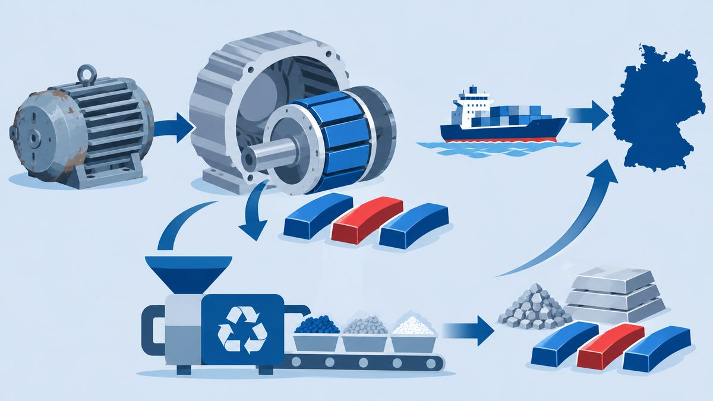

독일로 향한 폐자석 회수, 희토류 공급의 다음 단계

[AI 생성 일러스트] 기사 내용을 설명하는 도식이며 실제 사진이 아닙니다.
- 연간 자석 함유 폐기물 2만5000t 처리 계획
- 회수시설과 화학처리 거점을 연결하는 구조
- 부지 예약 단계로 실제 생산성과 비용은 미확정
폐자석에서 시작하는 유럽 공급망
희토류 재활용업체 사이클릭머티리얼스가 유럽 첫 자석 회수시설을 세울 장소로 독일 슈코파우를 골랐다. 11월 26일 마이닝닷컴 보도에 따르면 회사는 라이프치히 인근 다우 밸류파크의 토지를 확보하기 위한 예약 계약을 맺었다. 유럽에 계획한 다섯 시설 가운데 첫 사업으로, 가동 목표는 2028년이다. 현재 확인된 단계는 부지 선정과 예약이며, 시설이 이미 건설되거나 생산을 시작한 것은 아니다.
사업의 출발점은 새 광산이 아니라 사용을 마친 제품이다. 전기모터와 하드디스크, 드론, 산업용 장비에 들어 있는 영구자석을 꺼내 원료로 되돌리는 방식이다. 자동차·기술·방위산업에 필요한 희토류 공급원을 늘리되 신규 광산 개발과 다른 경로를 택했다는 의미가 있다. 보도는 세계 희토류 가공의 90%가 중국에 집중돼 있다고 설명했다.
자석을 회수해도 정제가 남는다
독일 시설의 계획상 처리량은 자석이 포함된 폐기물 기준 연간 2만5000t이다. 여기서 나올 것으로 제시된 자석 농축물은 연간 최대 750t이다. 두 수치는 서로 다른 대상을 가리킨다. 폐기물 전체가 희토류 제품이 되는 것이 아니라, 여러 재료가 섞인 투입물에서 자석 성분을 모으는 공정이다. 회수시설의 처리 규모를 희토류 산화물 생산능력으로 읽기는 어렵다.
회사는 자체 기술인 매그사이클로 영구자석을 추출한 뒤, 모아진 물질을 별도의 중앙 화학처리 거점으로 보내 정제하고 분리할 계획이다. 최종적으로 희토류 산화물을 얻으려면 이 후속 단계가 연결돼야 한다. 독일 시설은 완결된 공급망 전체라기보다 회수망의 첫 거점에 해당한다. 원료 수집과 자석 추출, 화학처리의 연결이 실제 공급량을 좌우하는 구조다.
유럽 희토류 수요의 최대 15%를 충당할 잠재력이라는 설명도 이번 독일 시설 한 곳의 확정 생산량을 뜻하지 않는다. 보도는 앞으로 구축할 유럽 회수 네트워크의 가능성으로 제시했다. 유럽의 희토류 자석 수요가 향후 10년 동안 두 배 이상으로 늘어날 것이라는 전망과 함께 읽어야 하는 수치다.
희토류 외 금속이 비용을 나눈다
이 사업의 경제성에서 눈에 띄는 부분은 함께 회수하는 금속이다. 독일 시설의 계획에는 연간 철강 1만4000t, 알루미늄 4600t, 구리 3000t의 생산도 담겼다. 회사 설명에 따르면 희토류 이외 재료가 매출에서 차지하는 비중은 40~50%다. 희토류 판매만으로 비용을 회수하는 모델과 달리, 폐기물 안의 여러 금속이 수익을 나누어 구성한다.
사이클릭은 이런 구조를 근거로 정부의 최저가격 보장 없이도 운영할 수 있다고 주장한다. 다만 이는 회사가 제시한 비용 경쟁력이다. 독일 신규 시설의 실제 운영 결과가 확인된 것은 아니다. 미국 정부와 가격 보장 계약을 맺은 MP머티리얼스와 지원 방식이 다르다는 점은 분명하지만, 그 차이만으로 어느 사업의 수익성이 더 높다고 판단할 자료는 없다.
핵심광물 가공의 경제성을 다룬 11월 27일 마이닝닷컴 기고문도 설비 규모와 상업적 성과를 구분했다. 가공업체의 이익은 원료와 에너지, 시약, 물류비를 지불한 뒤 남는 몫이다. 재료를 확보해도 가동률이 낮거나 고객의 품질 승인이 지연되면 고정비 부담이 커질 수 있다. 공급 다변화의 전략적 가치가 개별 시설의 수익으로 자동 전환되지는 않는다는 설명이다.
미국 운영 경험과 유럽 확장의 간격
회사는 지난 9월 미국 애리조나주 메사에서 첫 상업 규모 자석 회수시설을 열었다. 개발에는 17개월이 걸렸으며, 사우스캐롤라이나에서는 통합 재활용 단지도 건설하고 있다. 독일 사업은 이런 미국 내 확장에 이어 유럽으로 회수망을 넓히는 움직임이다. 다만 미국 시설의 개장 자체가 독일 사업의 처리량과 원가를 입증하는 것은 아니다.
원료 확보 측면에서는 전자폐기물 재활용업체 ERI와 협력해 미국 수거망을 활용하고 있다. 반면 제공된 보도에는 독일 시설에 들어갈 폐기물의 계약 물량과 공급 조건이 구체적으로 제시되지 않았다. 유럽 회수망의 잠재력을 실제 희토류 공급으로 바꾸려면 지역 내 투입물 확보와 후속 화학처리, 판매가 이어져야 한다. 이번 발표의 변화는 유럽 첫 부지가 정해졌다는 데 있으며, 상업적 성과는 그다음 단계에 남아 있다.
앞으로 볼 변수
- Op-Ed: Critical minerals face a post-construction test · mining.com · 2026-11-27
- Cyclic Materials picks Germany for first European plant · mining.com · 2026-11-26
이 포스팅은 쿠팡 파트너스 활동의 일환으로 수수료를 제공받습니다.